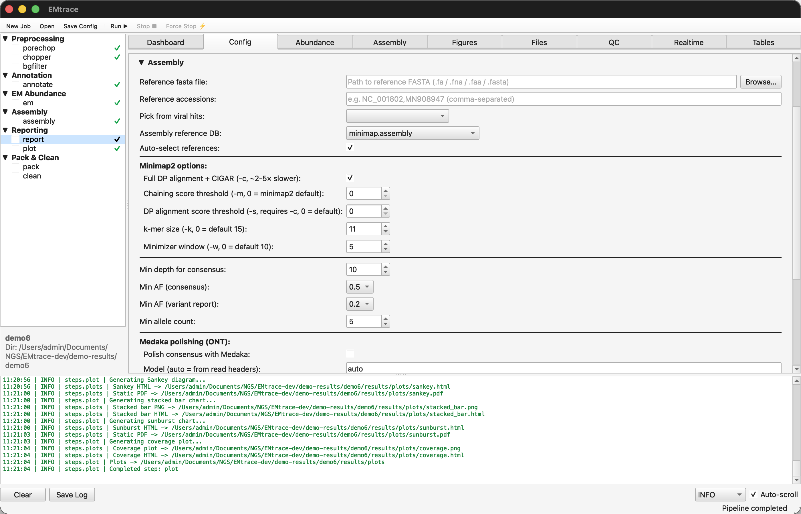
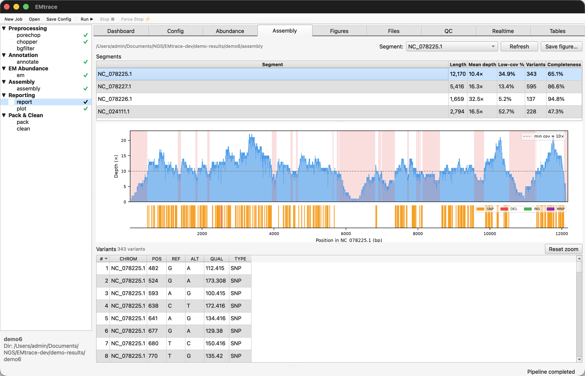
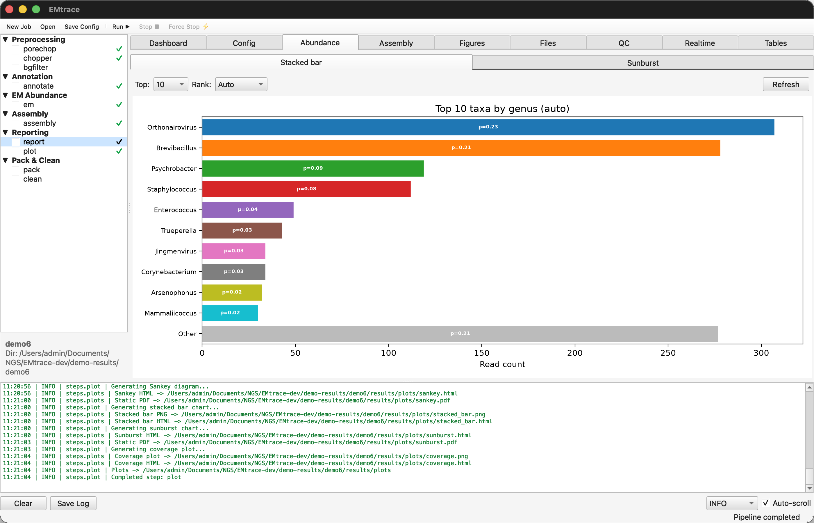

To read this offline, open demo/DEMO.html in a
browser.
A worked example on real sequencing data, small enough to run on a laptop. It covers the four things EMtrace does:
Demos 1–5 use the command line; Demo 6 repeats Demo 3 in the desktop app.
Run times below were measured on a 2023 MacBook Pro (Apple M2 Pro, 12 cores, 16 GB RAM) with 8 threads.
Contents
The demo data. demo/reads/ holds two
small public libraries (details):
1. Start EMtrace in a terminal. Installation is
covered in the User Guide.
The commands below call emtrace. Pick the route you
installed by:
Installed from source
(pip install -e ".[gui]"): activate the environment EMtrace
was installed into.
cd /path/to/EMtrace
source .venv/bin/activate
emtrace --versionInstalled macOS app (EMtrace.app
from the .dmg): the app's binary also runs the command-line
interface. Point emtrace at it for this terminal
session:
alias emtrace=/Applications/EMtrace.app/Contents/MacOS/EMtrace
emtrace --versionEach route should print the EMtrace version. The alias
lasts only for the current terminal, so repeat it in any new terminal
where you run emtrace.
2. Get the demo data. The demos run from a demo
folder that holds demo/reads/:
Installed from source: the reads are already in
the repository, in demo/reads/. The repository folder is
your demo folder:
cd /path/to/EMtraceInstalled macOS app: the reads are not part of
the app. Make a demo folder and download the demo/ folder
of the EMtrace
repository into it (about 14 MB: the reads, this page and its
figures):
mkdir -p ~/EMtrace-demo && cd ~/EMtrace-demo
curl -L https://github.com/weinstein-bioinfo/EMtrace/archive/refs/heads/main.tar.gz \
| tar xz --strip-components=1 EMtrace-main/demoRun every command of the demos from this folder.
3. Set the database directory and install the three databases the demos use:
export EMTRACE_DB_DIR=/path/to/EMtrace-databases
emtrace databases --install minimap.refseq.abv.1g # ~23 GB
emtrace databases --install diamond.uniref.vi # ~1.6 GB
emtrace databases --install minimap.rrnDB.dedup # ~0.4 GB, Demo 5 onlyminimap.refseq.abv.1g is the RefSeq archaeal, bacterial
and viral set reduced to one genome per bacterial and archaeal genus,
with all viral genomes kept. It is the database the User Guide
recommends for vector
samples such as ticks.
diamond.uniref.vi (UniRef100 viral proteins) is the
protein half of the vi.chain2 strategy, used in Demo 2.
minimap.rrnDB.dedup (rrnDB 5.10 16S rRNA genes, one
representative per named species) is the 16S reference of
--profile 16S, used in Demo 5. Skip it if
you run only the virus demos.
| Download | On disk | Download time | |
|---|---|---|---|
minimap.refseq.abv.1g |
~16 GB | ~23 GB | 15 min |
diamond.uniref.vi |
~0.5 GB | ~1.6 GB | 25 s |
minimap.rrnDB.dedup |
~0.09 GB | ~0.4 GB | 5 s |
| Total | ~16 GB | ~25 GB | ~15-16 min |
Disk space: allow about 35 GB — 25 GB for the databases and a few GB for results.
No host filter. The demo skips host and background filtering: the
--pipelists leave out the filter step (flt), and Demo 4 passes--hostgen 0. You therefore do not have to download a tick or human genome, and tick reads simply stay unannotated. For your own samples, keepfltin the step list and pass--bgfilterwith the host genome (default:Homo_sapiens).
4. Create the results folder in the demo folder. The
demos write their results to ./demo-results, and the joined
input files of Demos 3, 5 and 6 and the watch folder of Demo 4 go there
too:
mkdir -p demo-resultsWhat it shows: the viruses the original study confirmed by PCR are identified from the first 4,000 reads of the library.
Run (one batch, no assembly). The reads in this
library are short (mean at 345 bp), thus keep everything above 100 bp
with --minreadlength 100:
emtrace run \
--reads demo/reads/ticks58-37_0.fastq.gz \
--sample demo1 \
--res ./demo-results \
--pipe pore,chop,ann,em,rep \
--anns abv.1g \
--minreadlength 100 \
--numth 8 \
-vExpected run time: ~2 min.
Expected output. Under
demo-results/demo1/:
| Path | Contents |
|---|---|
reads/ |
Preprocessed reads, partitioned into viral, phage, bacterial and unannotated bins |
annotation/annot1.tsv |
One row per read: subject accession, taxon, score |
results/reports/abund_table.tsv |
Per-taxon EM abundance and read counts |
results/reports/stats_report.html |
Interactive report (open in a browser) |
results/plots/ |
Sankey, sunburst and stacked-bar figures, QC histograms |
In abund_table.tsv, look for
Orthonairovirus (CCHFV) and
Jingmenvirus (JMTV). A taxon counts as detected here
once it has at least 10 reads, the threshold used throughout this demo,
so that a handful of spurious alignments to a large database is not
reported as a finding:
Table 1 | Viruses detected in the first 4,000 reads
(abv.1g).
| Taxon | Reads (readn_em) |
EM probability (prob) |
|---|---|---|
| Orthonairovirus (CCHFV) | 90 | 0.180 |
| Jingmenvirus (JMTV) | 12 | 0.024 |
Most reads in the file are tick host sequence and stay unannotated
(stats_report.html), which is expected for a field library
analysed without a host filter.
The point of the demo: both viruses that Ergünay et al. confirmed by PCR in this pool are recovered from 4,000 reads — roughly what a MinION writes in its first few minutes.
Note how differently the two sit above the threshold. CCHFV is comfortable at 90 reads, but JMTV clears it with 12 — a fragile detection, close enough to the line that a smaller batch or a sample with less virus would miss it. A count that marginal is where a more sensitive search earns its place (Demo 2).
What it shows: chaining a protein search after the
nucleotide search recovers viruses too divergent for nucleotide
alignment, using the vi.chain2 strategy.
Run on the same batch, sending the reads minimap2 leaves unassigned to DIAMOND:
emtrace run \
--reads demo/reads/ticks58-37_0.fastq.gz \
--sample demo2 \
--res ./demo-results \
--pipe pore,chop,ann,em,rep \
--anns vi.chain2 \
--minreadlength 100 \
--numth 8 \
-vExpected run time: 2-3 min.
Expected output. As Demo 1, plus a second hit table,
annotation/annot1.diamond.uniref.vi.tsv, holding the
protein hits. Compare demo2/results/reports/abund_table.tsv
with Demo 1's:
Table 2 | Viral reads with the nucleotide search
alone (Demo 1) and with the protein search added (Demo 2,
vi.chain2).
| Taxon | Demo 1 (abv.1g) |
Demo 2 (vi.chain2) |
Change |
|---|---|---|---|
| Jingmenvirus (JMTV) | 12 | 276 | 23× |
| Orthonairovirus (CCHFV) | 90 | 134 | 1.5× |
| Mivirus (Bole tick virus 3) | — | 33 | detected |
| Phlebovirus | — | 1 | below threshold |
Reads are readn_em, the EM-adjusted count. CCHFV appears
as two species rows in Demo 2 (Orthonairovirus
parahaemorrhagiae and O. haemorrhagiae); the genus total
is given here.
JMTV gains most, from a marginal detection to an unambiguous one, and Mivirus appears only here. CCHFV gains least: it has closer RefSeq relatives for the nucleotide search to find.
Caution. The protein search uses a permissive DIAMOND bitscore threshold (≥ 80) because nanopore errors break reads into short ORFs. Treat a species supported only by protein hits as tentative and confirm it with a nucleotide hit, an assembly or a second method.
What it shows: EMtrace picks reference genomes automatically from the annotation hits, including one per segment of a segmented virus, and builds consensus sequences.
Run on all three batches together. The step list
adds ass (assembly), which the main workflow
does not include:
cat demo/reads/ticks58-37_*.fastq.gz > demo-results/ticks58-37_12k.fastq.gz
emtrace run \
--reads demo-results/ticks58-37_12k.fastq.gz \
--sample demo3 \
--res ./demo-results \
--pipe pore,chop,ann,em,ass,rep,plot \
--anns abv.1g \
--ref_auto \
--no-medaka \
--minreadlength 100 \
--numth 8 \
-v--no-medaka keeps the demo short and dependency-free.
Medaka polishing is on by default and needs a basecaller-matched model,
which this SRA deposit does not carry in its read headers.
Expected run time: ~2 min.
Expected output. demo3/assembly/ holds
the consensus sequences (consensus.fa), the alignment
(reads.refgen.md.bam), the variants (vcf.gz)
and the selection log (ref_selection.tsv). Automatic
selection ran per segment and chose four references:
Table 3 | References chosen automatically: reads,
mean depth, positions with at least one read (as in
coverage.html) and consensus coverage (positions with at
least 10 reads).
| Virus | Segment | Reference | Length (bp) | Reads | Mean depth | ≥ 1 read | Coverage |
|---|---|---|---|---|---|---|---|
| CCHFV | L | NC_078225.1 | 12,170 | 261 | 10.4× | 99.2% | 65.1% |
| CCHFV | M | NC_078227.1 | 5,416 | 193 | 16.3× | 97.9% | 86.6% |
| CCHFV | S | NC_078226.1 | 1,659 | 104 | 32.5× | 99.1% | 94.8% |
| JMTV | 4 | NC_024111.1 | 2,794 | 178 | 16.5× | 87.4% | 47.3% |
Coverage is the fraction of the reference called as non-N bases;
positions below the 10× depth threshold are masked. Overall, 736 reads
mapped at a mean depth of 14.3×
(results/reports/stats_assembly.csv).
Open results/plots/coverage.html in a
browser. One panel per selected reference plots read depth
along the genome; hover for the depth at a position, and drag to zoom
into a region. The reads spread along the whole of every CCHFV segment
instead of piling up in one place, which is what a genuine virus looks
like: a spurious hit (a conserved motif, a contaminant, a low-complexity
stretch) shows as a single spike. Static copies are in
coverage.png and coverage.pdf.
The plot's panel titles count every position with at least one read (the ≥ 1 read column of Table 3), so their percentages are higher than the consensus coverage, which counts only positions with at least 10 reads. The two together show where more sequencing would fill the consensus: the reads already reach almost the whole CCHFV genome, and the dips below 10× in the L segment are what remains masked.
Read ref_selection.tsv — it explains
each decision. Two things are visible there:
What to look for: coverage tracks depth, not virus. CCHFV's three segments fall from 94.8% to 65.1% as they get longer and shallower, and the one JMTV segment, with the fewest reads to spread over 2.8 kb, reaches 47.3%. Partial coverage from 12,000 reads is expected, not a failure. Demo 4 shows the same effect as a progression, batch by batch.
What it shows: EMtrace watches a directory and analyses each batch of reads as it arrives, the way it would during a MinKNOW run.
1. Start the monitor on an empty directory:
mkdir -p demo-results/minknow-sim
emtrace watch \
--dir demo-results/minknow-sim \
--sample demo4 \
--res ./demo-results \
--anns abv.1g \
--hostgen 0 \
--report \
--minreadlength 100 \
--numth 8 \
-vIt waits, printing nothing until a file appears.
2. In a second terminal, feed it the batches, imitating a sequencer writing files:
cd /path/to/EMtrace # the demo folder
for f in demo/reads/ticks58-37_*.fastq.gz; do
cp "$f" demo-results/minknow-sim/
sleep 120
doneThe 120-second gap gives each batch time to finish before the next arrives — a batch of 4,000 reads takes about 90 s here, so the monitor is idle and waiting when each new file lands. On a real run MinKNOW writes a file every few minutes.
3. Watch the console. After each batch EMtrace prints the top taxa by EM abundance. Expect Orthonairovirus from the first batch, with the ranking changing from 2nd to the 1st in the top taxa list.
4. Stop with Ctrl+C. EMtrace finishes the current batch, merges all batches into the job's standard folders and writes the final report.
Expected run time: 85–96 s per batch (median 90 s), and 53 s for the merge and report on Ctrl+C. Each batch is processed well inside the 120 s between files, thus keeping pase with a typical MinKNOW sequencer.
Expected output. Under
demo-results/demo4/:
| Path | Contents |
|---|---|
watch/batches/batch_000N/ |
One directory per batch, with its reads,
annotation and batch.json (batch number, read count, source
file) |
watch/realtime_annot.tsv |
Cumulative hit table, one row per read and subject, growing with each batch |
watch/results/abund_table.tsv |
The live abundance table, updated after every batch |
reads/,
annotation/, results/ |
The merged job, written on Ctrl+C |
The merged result matches a single run over the same 12,000 reads (Demo 3):
Table 4 | Merged watch-mode result against a single run over the same 12,000 reads.
| Taxon | Watch mode (Demo 4) | Single run (Demo 3) |
|---|---|---|
| Orthonairovirus (CCHFV) | 308 | 307 |
| Jingmenvirus (JMTV) | 35 | 34 |
Processing the library batch by batch therefore costs nothing in accuracy. EM is recomputed from scratch at the merge, so a difference of a read or two from the live table is normal.
No sequencing clock. SRA removed the per-read start times from this deposit, so EMtrace reports batches by read count only, with no sequencing time or throughput ratio. On a live MinKNOW run, where reads carry
start_time, it also reports how far ahead of the sequencer it is running.
What it shows: EMtrace profiles a full-length 16S amplicon library at species level with the bundled 16S settings, and the profile can be checked against the known composition of a mock community.
Run on both files together, with the 16S profile:
cat demo/reads/gutmock_r1_*.fastq.gz > demo-results/gutmock_r1_8k.fastq.gz
emtrace run \
--reads demo-results/gutmock_r1_8k.fastq.gz \
--sample demo5 \
--res ./demo-results \
--profile 16S \
--pipe pore,chop,ann,em,rep \
--numth 8 \
-v--profile 16S switches to the 16S profiling: the
16S.rrnDB.dedup annotation strategy, reads kept between
1,200 and 1,800 bp at mean quality ≥ 10, reads split at internal
adapters (chimeric amplicons), 25 secondary alignments per read for the
EM to weigh, a softer EM (temperature 10), and a 1% tail trim: the
smallest taxa that together hold at most 1% of the reads are dropped
from the reports. This removes the long tail of single-read neighbours
that full-length 16S produces against a 16S database. No host filtering
for 16S data, so flt is left out of the step list.
Expected run time: ~6 min.
Expected output. Under
demo-results/demo5/, the same layout as Demo 1.
results/reports/abund_table.tsv gives the species and genus
of every taxon with its EM probability (prob) and
EM-adjusted read count (readn_em).
results/EM.taxid_prob.tsv holds the EM estimate for every
taxon, before the tail trim.
Of the 8,000 reads, 6,874 (86%) pass the 1,200–1,800 bp, Q ≥ 10
filter, and every one of them is assigned to a bacterial 16S sequence
(results/reports/stats_report.html).
Compare the genera with the certificate's 16S-only composition, the truth used in the EMtrace manuscript:
Table 5 | Genus composition of the Gut Microbiome Standard: certificate (16S-only) against EMtrace.
| Genus | Expected (16S-only, %) | EMtrace (%) | Reads (readn_em) |
|---|---|---|---|
| Faecalibacterium | 17.6 | 19.0 | 1,304 |
| Veillonella | 15.9 | 27.1 | 1,863 |
| Escherichia | 12.1 | 11.1 | 760 |
| Bacteroides | 9.9 | 20.4 | 1,403 |
| Roseburia | 9.9 | 2.5 | 170 |
| Limosilactobacillus | 9.6 | 1.2 | 81 |
| Bifidobacterium | 8.8 | 2.4 | 163 |
| Fusobacterium | 7.5 | 2.1 | 143 |
| Prevotella | 5.0 | 8.0 | 549 |
| Clostridioides | 2.6 | 5.4 | 372 |
| Akkermansia | 0.97 | 0.9* | 64* |
| Methanobrevibacter (archaeon) | 0.07 | 0 | 0 |
| Other (taxa outside the standard) | 0 | 0.01 | 1 |
* In the EM estimate (results/EM.taxid_prob.tsv), but
dropped from the reports by the 1% tail trim.
Every reported genus is represented by the right species: Veillonella rogosae, Bacteroides fragilis, Faecalibacterium prausnitzii, Escherichia coli, Prevotella corporis, Clostridioides difficile, Roseburia hominis, Bifidobacterium adolescentis, Fusobacterium nucleatum and Limosilactobacillus fermentum, as on the certificate.
Four trace members (Salmonella, Enterococcus, Clostridium and the archaeon Methanobrevibacter; ≤ 0.07% each), below the 10-read threshold.
What to look for:
To score it yourself, the truth table and the synonym map used in the
manuscript are data/truth/gutmock_16S_truth.tsv and
gutmock_16S_collapse.tsv in EMtrace-benchmark.
What it shows: the analysis of Demo 3 run from the EMtrace desktop app instead of the command line, with the coverage of each assembled genome inspected in the app's Assembly view.
1. Prepare the input. The app takes one FASTQ file per job, so join the three batches as in Demo 3 (skip this if you ran Demo 3; the file is already there):
cat demo/reads/ticks58-37_*.fastq.gz > demo-results/ticks58-37_12k.fastq.gz2. Start the app.
emtrace gui.The window has three panels: the step list (left), the content area with its tabs (centre) and the live log (bottom).
3. Create the job. Choose File › New Job… (or New Job on the toolbar) and fill in:
| Field | Value |
|---|---|
| Job name | demo6 |
| Input reads | ticks58-37_12k.fastq.gz in
the demo-results folder (Browse…) |
| Reads R2 (paired-end) | leave empty |
| Output base directory | the demo-results folder used
by the other demos |
4. Set the configuration on the Config tab (View › Config). Keep Profile at default (virome) and change these settings, the GUI equivalents of Demo 3's options:
| Section | Setting | Value | Demo 3 option |
|---|---|---|---|
| Runtime | Threads | 8 | --numth 8 |
| Preprocessing › Chopper | Min length (bp) | 100 | --minreadlength 100 |
| Annotation | Annotation preset | abv.1g |
--anns abv.1g |
| Assembly | Auto-select references | on | --ref_auto |
| Assembly › Medaka polishing (ONT) | Polish consensus with Medaka | off | --no-medaka |
Click Apply Changes, then File › Save
Config… to keep the settings with the job
(demo-results/demo6/config.yaml).
5. Choose the steps. In the step list, tick
porechop, chopper,
annotate, em,
assembly, report and
plot. Leave bgfilter (host filtering)
and the Pack & Clean steps unticked. This is Demo 3's
--pipe pore,chop,ann,em,ass,rep,plot.
6. Run. Click Run ▶ on the toolbar (or Run › Run Pipeline). Each step shows ● while it runs and ✓ when it finishes, and the log panel follows the run.
Expected run time: ~2 min

coverage.png
and coverage.html.
7. Inspect the results. The output in
demo-results/demo6/ is the same as Demo 3's, with the same
four references and the same read counts. The app shows it in its
tabs:
coverage.png shows in the app; selecting
coverage.html, the interactive depth plot of Demo 3, opens it
in your web browser (the macOS app leaves out the in-app HTML viewer to
save space).

What to look for: step through the four segments in the Assembly tab. Each CCHFV segment is covered from end to end, and the red-shaded stretches show which parts of the consensus are masked below 10×.
| Problem | Likely cause and fix |
|---|---|
database not found |
EMTRACE_DB_DIR is unset or
points elsewhere. Check emtrace databases --list. |
| A required tool is missing at startup | Install the external tools from Bioconda; see the User Guide. |
| Fewer viral reads than expected, or a virus missing | These viruses are divergent. If a single
batch gives too few reads, run all three (Demo 3) or try
--anns vi.chain2, whose protein search is less sensitive to
sequence distance. |
| Assembly produces no consensus | --ref_auto needs at least 10
reads on a reference. Check that annotation found the viruses
first. |
| Medaka warnings | Medaka is optional and skipped with a
warning if absent. The demo passes --no-medaka. |
| Watch mode ignores files already in the directory | By design. Pass
--scan-existing, or copy the files in after the monitor
starts. |
| Demo 5 keeps far fewer than 8,000 reads | --profile 16S keeps reads of
1,200–1,800 bp at mean quality ≥ 10. Check that the profile is set;
without it the virus defaults apply. |
demo/reads/ holds two libraries: a tick field library
for the virus demos (1–4 and 6) and a 16S mock community for Demo 5.
demo/reads/ holds 12,000 nanopore reads (3.8 MB) from
tick pool 58-37, a field library of 301 pooled
Rhipicephalus bursa ticks collected in Turkey, published by
Ergünay et al. 2023 (Front. Microbiol. 14:1177651; BioProject
PRJNA878809, run SRR21504617). These are the first 12,000 reads of the
public deposit, split into three files of 4,000:
| File | Reads |
|---|---|
ticks58-37_0.fastq.gz |
4,000 |
ticks58-37_1.fastq.gz |
4,000 |
ticks58-37_2.fastq.gz |
4,000 |
The pool contains two viruses confirmed by PCR in the original study:
The original study also reported two further viruses from sequence data alone, Mivirus (Bole tick virus 3) and Phlebovirus (brown dog tick phlebovirus 2); both turn up in Demo 2, once a protein search is added.
Note. The reads come from SRA already adapter-trimmed and quality-filtered by the original authors, and SRA removed the per-read start times. EMtrace's own preprocessing is therefore close to a no-op on this library, and watch mode reports no sequencing clock (Demo 4).
Why Demos 1–4 pass
--minreadlength 100. This is a short-read library:
the mean read is 345 bp, and 76% of the reads are between 100 and 399
bp. EMtrace's default minimum of 400 bp is tuned for raw MinKNOW output,
where reads that short are mostly adapter and fragments, and it would
discard three quarters of this library before annotation. The original
authors had already filtered the deposit at 100 bp, so the demo matches
that threshold and the reads enter the pipeline as deposited — the same
setting used for this library in the EMtrace
manuscript.
8,000 full-length 16S rRNA amplicon reads (8.9 MB; mean read 1.5 kb)
of the ZymoBIOMICS Gut Microbiome Standard (D6331),
from Oxford Nanopore's open dataset zymo_16s_2025.09:
replicate 1 (flow cell FBB38036, barcode 07), SQK-MAB114.24, R10.4.1,
basecalled by ONT with Dorado 1.1.1 (SUP model v5.2.0). They are the
first 8,000 reads of the replicate by read start time — the first 17 min
of sequencing — split into two files of 4,000:
| File | Reads | Sequencing time |
|---|---|---|
gutmock_r1_0.fastq.gz |
4,000 | 0–9.4 min |
gutmock_r1_1.fastq.gz |
4,000 | 9.4–16.8 min |
The standard is a defined mix of 14 bacterial species (five Escherichia coli strains among them), one archaeon and two yeasts. Its certificate gives the expected composition, so the result can be scored against a known answer. ONT publishes one basecalled BAM per replicate rather than MinKNOW's batch files, so the 4,000-read files were cut here from the reads sorted by start time, as in the EMtrace manuscript.
Check the read lengths of your own libraries before lowering the
default. emtrace run warns when many reads fall below the
minimum.
This demo is a small illustration, not the benchmark. To reproduce
the figures and tables of the EMtrace
manuscript, use EMtrace-benchmark
with EMtrace v1.0.0. The replays of both libraries are framework C
(jobs/framework_C/framework_C.replay.bash; the gut standard
as gutmock_sup_r1–r4), and their score tables
are in metrics/framework_C/.
Weinstein I, Smura T, Leppanen O, Krupińska M, Vauhkonen H, Sironen T, Grzybek M, Vapalahti O, Kant R. EMtrace: offline nanopore metagenomics on a laptop for rapid viral diagnostics, genome recovery and 16S profiling. bioRxiv (2026). https://doi.org/10.64898/2026.11.09.765303
Ergünay, K. et al. Metagenomic nanopore sequencing of tick-borne pathogens and the virome of Rhipicephalus bursa ticks. Front. Microbiol. 14, 1177651 (2023). BioProject PRJNA878809, run SRR21504617.
Oxford Nanopore Technologies. ZymoBIOMICS Microbial Communities with
16S amplicon (dataset zymo_16s_2025.09). https://epi2me.nanoporetech.com/zymo_16s_2025.09/
(2025). s3://ont-open-data/zymo_16s_2025.09, GutMock
replicate 1 (FBB38036, barcode 07).